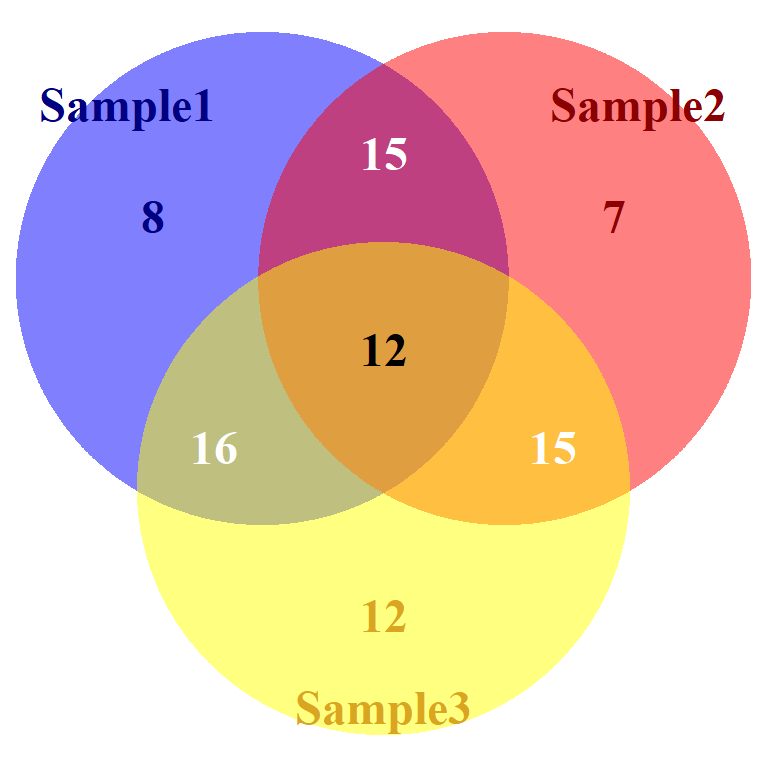
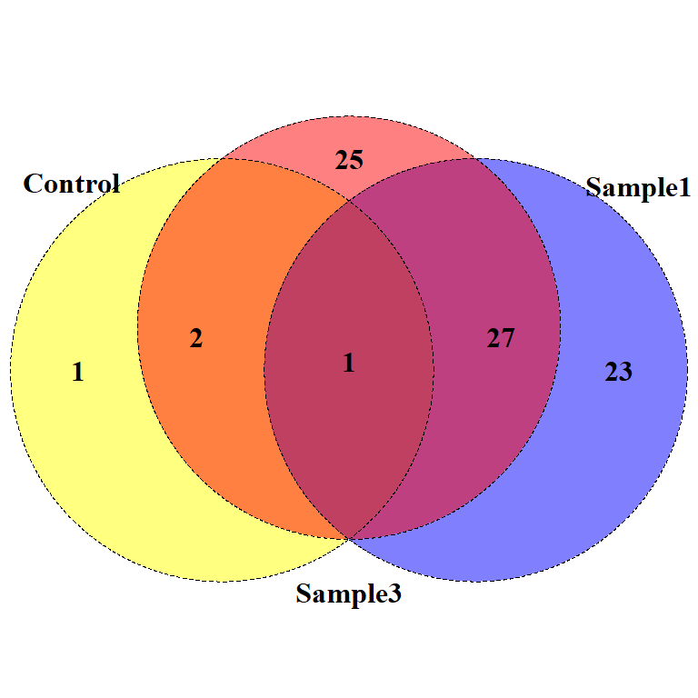

Making Venn and Euler Diagrams in R
A quick tutorial focusing on the different input formats and features of four Venn diagram packages.
Not interested in using r? Click here to find links to non-programming, web-based solutions.
Summary of packages in tutorial:
- Venn
- Best use: Fast venn diagrams
- Can make a venn diagram with up to 7 sets.
- VennDiagram
- Best use: Publication worthy Venn diagrams
- Makes venn diagrams with up to 4 sets or euler diagrams with up to 3 sets.
- High resolution, options for customization
- Eulerr
- Best use: Euler diagrams
- Great default settings for making beautiful Euler diagrams
- Watch out for missing relationships… Euler diagrams can be tricky sometimes.
- Limma
- Best use: Venn diagrams after microarray analysis
- Can make a venn diagram with up to 5 sets.
- Input is a count matrix rather than a list of IDs.
Create Sample Dataset
This sample dataset consists of three samples and one control. All have the same genes (IDs) but different p-values (pval).
We want to find out how many genes are significant in each sample and how many of those genes overlap with the other samples.
# Sample dataset ####
set.seed(23)
IDs <- paste("Gene", 1:100, sep = "_")
sample1 <- data.frame(IDs, pval = rnorm(length(IDs)))
sample2 <- data.frame(IDs, pval = rnorm(length(IDs)))
sample3 <- data.frame(IDs, pval = rnorm(length(IDs)))
control <- data.frame(IDs, pval = runif(length(IDs)), 0.01, 1)
# Get significant genes in each sample.
sig1 = sample1[sample1$pval < 0.05,]
sig2 = sample2[sample2$pval < 0.05,]
sig3 = sample3[sample3$pval < 0.05,]
sigcntl = control[control$pval < 0.05,]Venn
https://cran.r-project.org/web/packages/venn/venn.pdf
Venn can create a venn diagram with up to 7 sets and is quick and easy to use.
library(venn)
# Input is list of IDs
# Get all significant genes (p values < 0.05)
ID_list <- list(Sample1=sample1$IDs[sample1$pval < 0.05],
Sample2=sample2$IDs[sample2$pval < 0.05],
Sample3=sample3$IDs[sample3$pval < 0.05],
Control=control$IDs[control$pval < 0.05])
venn(ID_list,
cexil = 1.5, # Change intersection labels
cexsn = 1.25, # Change set name labels
zcolor = c("blue", "red", "yellow", "green"), opacity = 0.5)VennDiagram
https://cran.r-project.org/web/packages/VennDiagram/VennDiagram.pdf
VennDiagram has many options for cutsomization and can be used to create high quality figures.
You can use it to make both Venn and Euler diagrams.
library(VennDiagram)
# Input is list of IDs
ID_list <- list(Sample1=sig1$IDs, Sample2=sig2$IDs, Sample3=sig3$IDs, Control=sigcntl$IDs)
myVenn <- venn.diagram(x=ID_list[1:4], filename = NULL,
fill = c("blue", "red", "yellow", "green"), alpha = 0.5, col="transparent",
cex = 1.25, fontface="bold", # Intersection label size and style
cat.fontface="bold", cat.cex = 1, # Category name size and style
cat.col = c("navy", "darkred", "goldenrod", "darkgreen"))
grid.newpage()
grid.draw(myVenn)
myVenn <- venn.diagram(x=ID_list[1:3], filename = NULL, fill = c("blue", "red", "yellow"),
alpha = 0.5, col="transparent",
cex = 1.5, fontface="bold", # Intersection label size and style
cat.cex=1.5, cat.fontface="bold", # Category name size and style
cat.dist=c(-0.01,-0.01,-0.01), # Category name distance from edge of the circle
cat.pos = c(325,35,180), # Category name position in degrees
cat.col = c("navy", "darkred", "goldenrod"),
label.col = c("navy", "white", "darkred", "white", "black", "white", "goldenrod"))
grid.newpage()
grid.draw(myVenn)
myVenn <- venn.diagram(x=ID_list[c(1,3,4)], fill = c("blue", "red", "yellow"),
alpha = 0.5, fontface = "bold",
cat.fontface = "bold",
lty = "dashed", lwd=0.75,
filename = NULL)
grid.newpage()
grid.draw(myVenn)
myVenn <- venn.diagram(x=ID_list[c(1,4)], fill = c("blue", "yellow"),
alpha = 0.5, fontface = "bold",
cat.fontface = "bold",
cat.dist = c(-0.1,0.03), cat.pos = c(-30,25),
lty = "dashed", lwd=0.75,
filename = NULL)
grid.newpage()
grid.draw(myVenn)Input data: Creating set relationship or count matrix
Both Limma and Eulerr do not accept a list of IDs as input. You can easily change a list of IDs into a count matrix. Here is one way to do that:
library(reshape2)
ID_list_m <- melt(ID_list[1:length(ID_list)])
ID_counts <- dcast(ID_list_m, value ~ L1, fun.aggregate = length)
head(ID_counts)## value Control Sample1 Sample2 Sample3
## 1 Gene_10 0 0 1 1
## 2 Gene_100 0 0 1 0
## 3 Gene_11 0 0 1 1
## 4 Gene_12 0 1 0 0
## 5 Gene_13 0 1 0 1
## 6 Gene_14 0 0 0 1Eulerr
Eulerr’s default settings for creating Euler diagrams are really beautiful. Input data is a count matrix.
https://cran.r-project.org/web/packages/eulerr/vignettes/introduction.pdf
library(eulerr)
# Input is a count matrix
fit <- euler(ID_counts[2:4])
plot(fit, quantities=TRUE)However, Eulerr diagrams can be tricky sometimes …
Notice that Eulerr is missing the overlap between Sample 2 and the Control (Gene_39):
| value | Control | Sample1 | Sample2 | Sample3 |
|---|---|---|---|---|
| Gene_27 | 1 | 1 | 0 | 1 |
| Gene_30 | 1 | 0 | 0 | 1 |
| Gene_39 | 1 | 0 | 1 | 1 |
| Gene_65 | 1 | 0 | 0 | 0 |
Gene_39 is also missing below. Some relationships are difficult to show in euler diagrams.
fit <- euler(ID_counts[2:5])
plot(fit, quantities=TRUE)Limma
https://bioconductor.org/packages/devel/bioc/manuals/limma/man/limma.pdf
Limma’s vennDiagram function can plot up to five sets and accepts a matrix of counts rather than a list of IDs. Click here to see sample data.
Count matrix:
## value Control Sample1 Sample2 Sample3
## 1 Gene_10 0 0 1 1
## 2 Gene_100 0 0 1 0
## 3 Gene_11 0 0 1 1
## 4 Gene_12 0 1 0 0
## 5 Gene_13 0 1 0 1
## 6 Gene_14 0 0 0 1Notice that it also shows the genes that were not signicant in any of the samples (bottom right corner).
#biocLite("limma")
library("limma")
vennDiagram(ID_counts[2:4], include = "both",
names = c("Sample 1", "Sample 2", "Sample 3"),
circle.col=c("blue", "red", "yellow"))vennDiagram(ID_counts[2:5], include = "both",
names = c("Sample 1", "Sample 2", "Sample 3", "Control"),
circle.col=c("blue", "red", "yellow", "green"))
Limma was written for processing microarray data and the venn diagram function works well following this pipeline:
fit <- eBayes(lmFit(Y,x))
results <- decideTests(fit)
a <- vennCounts(results)
vennDiagram(a)See https://rdrr.io/bioc/limma/man/ebayes.html for more information
Non programming solutions
If you just want to make a quick venn diagram, here are some online tools to help you:
- Venny
- http://www.forestrylab.org/tool/Venny/
- http://bioinfogp.cnb.csic.es/tools/venny/
- Up to 4 different sets
- Not proportional
- Can include percents or counts
- BioVenn
- http://www.biovenn.nl/
- Up to 3 different sets
- Proportional
- InteractiVenn
- http://www.interactivenn.net/
- Up to 6 different sets
- Not proportional
- Venn by Bioinformatics and Evolutionary Genomics
- http://bioinformatics.psb.ugent.be/webtools/Venn/
- Up to 3 different sets